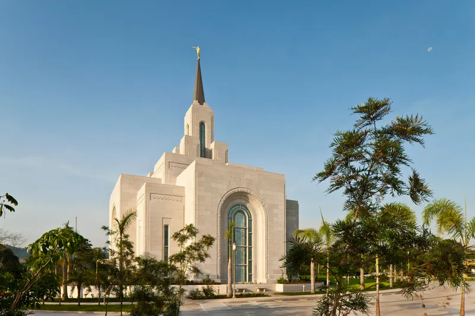

a beatiful temple of the Curch of Jesus Christ of Latter-day Saintsa beatiful temple of the Curch of Jesus Christ of Latter-day Saintsa beatiful temple of the Curch of Jesus Christ of Latter-day Saintsa beatiful temple of the Curch of Jesus Christ of Latter-day Saintsa beatiful temple of the Curch of Jesus Christ of Latter-day Saintsa beatiful temple of the Curch of Jesus Christ of Latter-day Saintsa beatiful temple of the Curch of Jesus Christ of Latter-day Saintsa beatiful temple of the Curch of Jesus Christ of Latter-day Saintsa beatiful temple of the Curch of Jesus Christ of Latter-day Saints